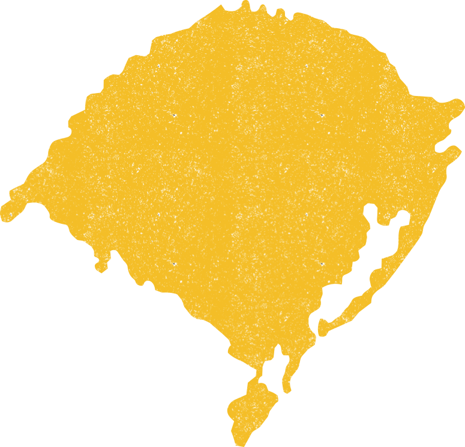
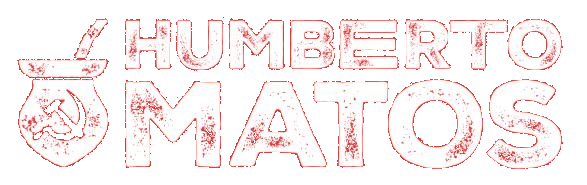

A sua participação no acúmulo de forças é o que vai fazer a diferença. Cada pessoa que se junta à nossa rede fortalece para construir uma nova forma de fazer política, com o povo de verdade.




Pré-candidato a deputado estadualHumberto Matos é professor da rede pública, youtuber há 10 anos e militante por um Rio Grande do Sul com emprego, educação pública de qualidade e desenvolvimento regional com sustentabilidade. Agora pré-candidato a deputado estadual pelo Rio Grande do Sul pelo PCdoB.
Apoie nossa caminhada Participe da nossa vaquinha!A sua participação no acúmulo de forças é o que vai fazer a diferença. Cada pessoa que se junta à nossa rede fortalece para construir uma nova forma de fazer política, com o povo de verdade.